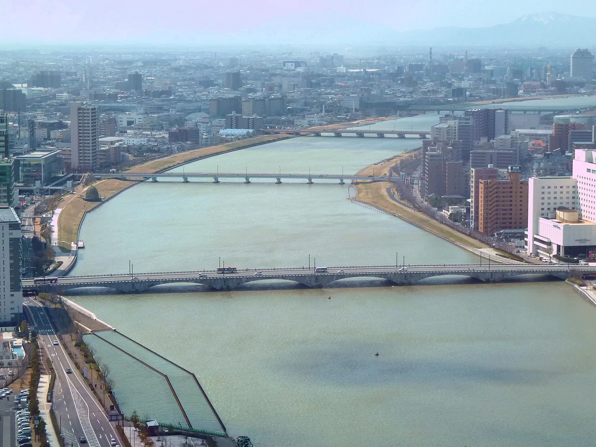

Niigata คู่มือท่องเที่ยวสำหรับผู้เรียนภาษาญี่ปุ่น
สรุป
Niigata หันไปทะเลญี่ปุ่น เป็นหัวใจของข้าวและสุรา (sake) ของญี่ปุ่น มีชื่อเสียงจากข้าว Koshihikari คุณภาพดีที่สุด โรงสุรา (brewery) นับสิบ และอาหารทะเลที่อุดมสมบูรณ์ ในฤดูหนาว เทือกเขาได้รับหิมะขาวที่หนาแน่นมากที่สุดของประเทศ ดึงดูดนักท่องเที่ยวสกี และผู้รักษา onsen ไปยังประเทศ 'Snow Country' ที่มีชื่อเสียง
📍 ชม: Bandai Bridge (Bandaibashi) · 🥢 ลอง: Koshihikari rice & local sake · แหล่งที่มา
ข้าว สาเก และหิมะบนชายฝั่ง Sea of Japan

🍜 อาหาร ▰▰▰▱▱ 🏯 วัฒนธรรม ▰▰▱▱▱ 🏙 เมือง ▰▰▱▱▱ 🚄 การเดินทาง ▰▰▰▱▱ 🌿 ธรรมชาติ ▰▰▰▰▱
🥢 ลอง: Koshihikari rice & local sake · 📍 ชม: Bandai Bridge (Bandaibashi)
🗣 お米がおいしいですね。 Okome ga oishii desu ne.
Niigata ผลิตข้าวและสาเกที่ดีที่สุดในญี่ปุ่น มีหิมะสำหรับสกีระดับโลก และมองเห็น Sado Island ข้ามทะเล เป็นเพียงการขึ้นรถ shinkansen สั้นๆ จาก Tokyo
ต้องไปดู
★ Bandai Bridge (Bandaibashi)★ Northern Culture Museum (Hoppo Bunka Hakubutsukan)★ Yahiko Shrine💎 Furumachi Geigi (geisha) experience💎 Sado Island taiko with Kodo
- Sado Island และประวัติศาสตร์การขุดทองคำ
- Echigo-Tsumari open-air art fields
- สกีรีสอร์ตรอบ Yuzawa
- โรงงานผลิตสาเกท้องถิ่น
PR วางแผนที่พัก
ลิงก์บางตัวเป็นลิงก์พันธมิตร เราอาจได้รับค่าตอบแทนโดยคุณไม่เสียค่าใช้จ่ายเพิ่ม เราแนะนำเฉพาะบริการที่เราใช้เอง
ต้องกิน
★ Koshihikari rice & local sake★ Wappameshi💎 Noppe (noppei-jiru)💎 Suruten (squid 'tempura')
ข้าว Koshihikari สาเก และ hegi-soba
การเดินทางและช่วงเวลาที่ดีที่สุด
การเดินทาง: Niigata ห่างจาก Tokyo ประมาณ 2 ชั่วโมง Echigo-Yuzawa ประมาณ 1 ชั่วโมง 15 นาที โดย Jōetsu Shinkansen
ช่วงเวลาที่ดีที่สุด: ฤดูหนาวสำหรับสกี ฤดูร้อนสำหรับปีของ Echigo-Tsumari art triennale
เรียนภาษาญี่ปุ่น
おすすめは何ですか？
Osusume wa nan desu ka? — "sake — Niigata เป็นหนึ่งในภูมิภาคชั้นนำของญี่ปุ่นสำหรับสาเก"
คำท้องถิ่น
日本酒
nihonshu — sake — Niigata เป็นหนึ่งในภูมิภาคชั้นนำของญี่ปุ่นสำหรับสาเก
💡 รู้ไว้ดี
ที่ Echigo-Yuzawa Station 'ponshukan' ให้คุณชิมสาเกท้องถิ่นหลายสิบชนิดด้วยเหรียญ
PR วางแผนที่พัก
ลิงก์บางตัวเป็นลิงก์พันธมิตร เราอาจได้รับค่าตอบแทนโดยคุณไม่เสียค่าใช้จ่ายเพิ่ม เราแนะนำเฉพาะบริการที่เราใช้เอง
แหล่งที่มา: Japan National Tourism Organization (JNTO).
ข้อมูลตรวจสอบกับสำนักงานท่องเที่ยวอย่างเป็นทางการ ความคิดเห็นเป็นของเรา